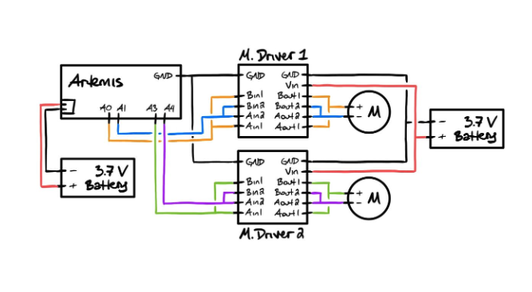
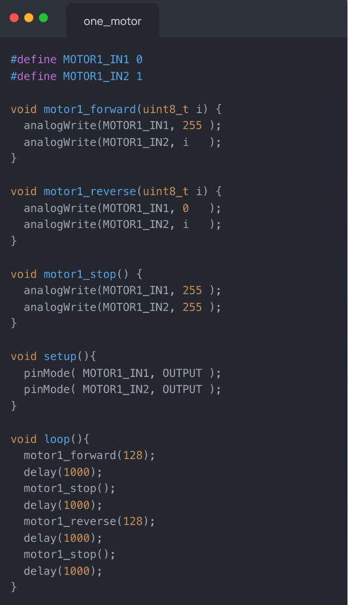
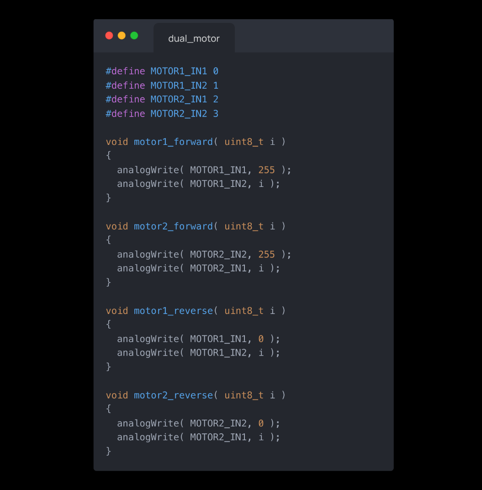
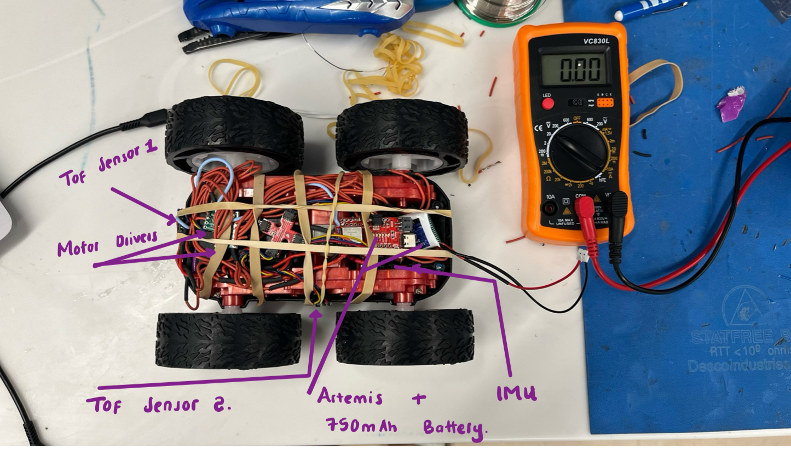
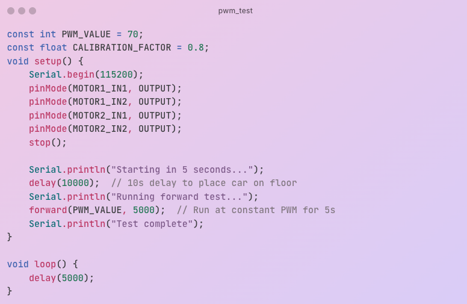

Lab 4: Motors and Open Loop Control
Prelab
To prepare for Lab 4, I designed the motor control circuit using the SparkFun RedBoard Artemis Nano and two DRV8833 dual motor drivers. Each driver controls one motor, with inputs and outputs paralleled to double current capacity (~3A total), as recommended in the datasheet. The Artemis pins were chosen for PWM capability: A0 (IN1) and A1 (IN2) for Motor 1 (left), A2 (IN1) and A3 (IN2) for Motor 2 (right). The connection diagram shows the Artemis powered via USB and motor drivers via a 3.7V 850mAh battery, separated to avoid EMI from motor switching affecting the Artemis. This decoupling ensures stable sensor operation later. This connection was inspired by Stephen Wagner's connection (SPRING 2024)

Lab Tasks
Oscilloscope Setup
After soldering one of the two motor drivers to my artemis board, I tested it's output working with an external 3.7V bench supply to match the battery voltage, ensuring safe debugging. Using A0 (HIGH_PIN) and A2 (PWM_PIN), I swept PWM from 0–255 and probed the paralleled AOUT1/BOUT1 output inspired by Nila Narayan’s example from 2024.
Motor Integration
I disassembled the Force1 RC car as instructed on the lab handout , removed the custom control PCB, and wired the left motor to one of the drivers. With the car elevated, I tested forward motion (A0/A2 ), verifying both wheels spun correctly after adjusting Motor 1’s direction (initially reversed). The motor driver were still powered on by the 3.7 bench supply which I later switched to battery power for the next sections. Switching to battery power (3.7V), the motors ran consistently.
I used the code snippet below with analogWrite() to get the wheels on one side of the car to spin in both directions.

Dual Motor
With one dual motor driver connected, working, and powered by battery, I soldered a second motor driver much the same way, this time to pins 3 and 4 on the Artemis. I then connected both drivers to the same battery cable and used analogWrite() to test both motors.
I used the code snippet below with analogWrite() to get the wheels on both side of the car to spin in both directions.

Chassis Installation
Components were secured in the chassis (Artemis center, drivers on sides, battery below), minimizing EMI and ensuring nothing protruded beyond wheels. On-ground tests in the hallway used a 5s delay to avoid chasing the fast car.

Minimum PWM
On the floor, I tested PWM values experimentally and found that the car began moving at PWM 60 forward (slightly higher to start due to static friction) and 80 for turns, consistent with motor thresholds.

Calibration
Testing my motors, the car would turn to the left when driving straight. This implied that the left motors were spinning at a higher rate than the right motors, hence need for calibration.
To find a good calibration factor, I tested different values manually from 0.95 and ended up finding that at 0.8 , the car maintained a straight line motion implying both motors were now spinnig at the same speed rate.
Open-Loop Control (Task 10)
I programmed an untethered, open-loop sequence using PWM 190 (forward/backward) and 255 (turns) with a calibration factor of 0.8. After uploading and disconnecting USB, the battery-powered car executed this sequence reliably on the floor.
Note: Don’t mind the gloomy video—I recorded this in my basement with no windows and minimal lighting.
The code snippet below outlines the sequence implemented:

Conclusion
This lab transitioned my car from manual to open-loop control, leveraging PWM and calibration for reliable motion. The untethered sequence demonstrated robust motor control, ready for future sensor integration.